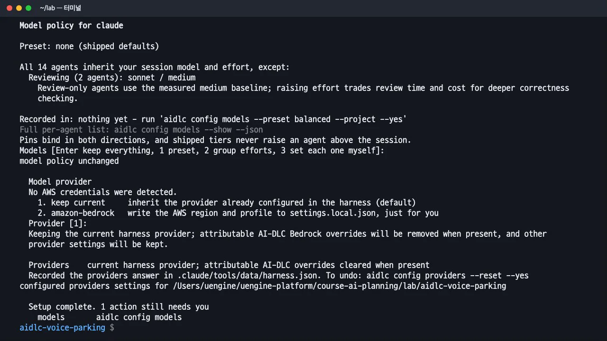
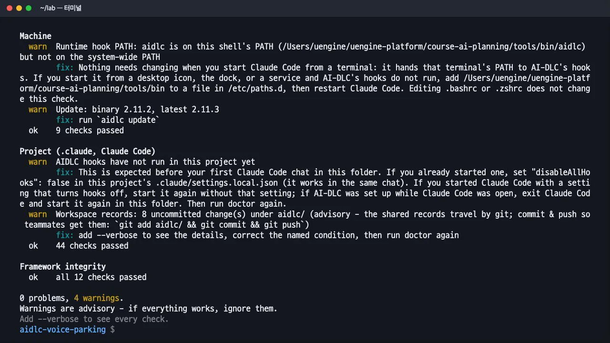
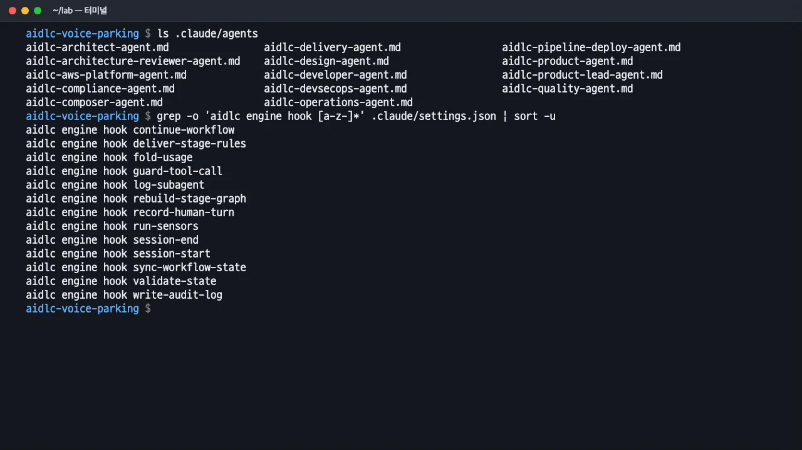

AI-DLC를 설치하고, 새 실습 폴더를
aidlc config --harness claude로 Claude Code에 연결한 뒤aidlc doctor로 점검합니다. 폴더에 깔리는 에이전트·훅·기억 파일이 무엇인지 봅니다.
이 장의 산출물 · GitHub
실습을 실제로 실행한 결과가 공개 저장소 uengine-oss/tutorial-aidlc-handson의 level1-poc/ 폴더에 있습니다. 본문의 파일 이름을 눌러도 해당 파일이 열립니다.
memory/— 규칙 파일 org·team·project·phasesaidlc-state.md— 진행 상태
무엇을 · 왜#
AI-DLC는 특정 도구에 종속되지 않는 엔진(aidlc 명령)과 각 도구를 연결하는 하네스로 구성됩니다. 같은 엔진이 Claude Code, Kiro, Codex CLI, Cursor, opencode, GitHub Copilot에서 동작합니다. aidlc config --harness claude는 이 폴더에 Claude Code용 하네스를 설치하는 명령입니다. 설치되는 항목은 세 가지입니다.
| 무엇 | 어디 | 하는 일 |
|---|---|---|
| 에이전트 14개 | .claude/agents/ |
제품, 설계, 개발, 품질, 배포, 운영 같은 역할과 검토 전용 2개, 단계 구성을 제안하는 composer |
| 훅 13가지 | .claude/settings.json의 hooks |
단계 규칙을 매번 다시 넣기, 사람의 답 기록, 감사 기록, 센서 실행, 상태 동기화 |
| 기억(규칙) 파일 | aidlc/spaces/default/memory/ |
org.md(기본값) → team.md(팀) → project.md(이 프로젝트) 순으로 쌓이는 규칙 |
대화가 길어지면 에이전트가 앞의 지시를 잊기 쉽습니다. AI-DLC는 지시를 대화뿐 아니라 파일에도 저장합니다. 도구를 호출할 때마다 훅이 현재 단계의 규칙과 기억 파일을 다시 넣어 줍니다. 진행 상태도 파일에 남으므로 /compact로 대화를 줄여도 단계가 사라지지 않습니다.
따라 하기#
- 설치. macOS·Linux·WSL에서는 공식 설치 스크립트 한 줄로 설치합니다. Bun이나 Node.js 없이
aidlc명령 하나가 설치됩니다. 기본 설치 위치는~/.local/bin이고,AIDLC_BIN_DIR·AIDLC_INSTALL_ROOT로 바꿀 수 있습니다.Windows PowerShell의 설치 명령은curl -fsSL https://github.com/awslabs/aidlc-workflows/releases/latest/download/install.sh | sh aidlc --version && claude --version # aidlc 2.11.2 (runtime 2.11.2) # 2.1.318 (Claude Code)irm https://github.com/awslabs/aidlc-workflows/releases/latest/download/install.ps1 | iex입니다. - 실습 폴더와 git. 빈 폴더를 만들고 git 저장소로 초기화합니다. AI-DLC의 작업 기록은 git으로 팀과 공유하는 것을 전제로 합니다.
mkdir aidlc-voice-parking && cd aidlc-voice-parking && git init - Claude Code에 연결.
aidlc config --harness claude를 실행하고 모든 항목에서 기본값을 선택합니다. MCP 서버는 끕니다(MCP [2]). 비어 있는 두 항목을 지금 채울지 묻는 질문에는 Enter를 누릅니다. 설정은 프로젝트에 기록하고, 모델 정책과 제공자는 현재 Claude Code 설정을 유지합니다.
aidlc config --harness claude 실행 화면 - 점검.
aidlc doctor가 실행 환경, 프로젝트, 프레임워크 무결성을 차례로 점검합니다. 이번 실행 결과는0 problems, 4 warnings였습니다. 경고는 "아직 첫 대화를 하지 않아 훅이 실행된 적이 없다", "새 버전 2.11.3이 있다", "작업 기록이 아직 커밋되지 않았다" 같은 참고 사항입니다.
aidlc doctor 결과 - 설치된 항목 둘러보기. 에이전트 목록과 훅, 기억 파일을 확인합니다.
ls .claude/agents grep -o 'aidlc engine hook [a-z-]*' .claude/settings.json | sort -u find aidlc -name "*.md" | sort
에이전트 14개와 훅 13가지
녹화 환경에서 바꾼 것#
- 녹화할 때는 사용자 홈을 변경하지 않으려고 설치 위치를 실습 자료 폴더로 바꿔 두었습니다(
AIDLC_INSTALL_ROOT,AIDLC_BIN_DIR). 실습할 때는 기본 위치를 그대로 사용하면 됩니다. - 설치 장면은 따로 녹화하지 않았습니다. 설치 명령은 위 1번 그대로입니다.
확인 문제#
가이드에 나온 aidlc init --harness claude-code --scope workshop을 실제로 하려면 어떻게 하나요?
연결은 aidlc config --harness claude로 하고, 스코프는 Claude Code 안에서 첫 요청 때 /aidlc workshop <만들 것>처럼 고릅니다. 프로젝트의 기본 스코프를 미리 정하려면 .claude/settings.json의 env.AWS_AIDLC_DEFAULT_SCOPE를 바꿉니다(기본 classic).
대화를 /compact로 줄이면 진행 중인 단계가 사라지나요?
사라지지 않습니다. 단계와 결정 사항은 aidlc/spaces/default/intents/<날짜>-<이름>/aidlc-state.md와 감사 기록에 남아 있고, 훅이 매번 현재 단계의 규칙을 다시 넣습니다.